卢卡斯的谜题——1883年
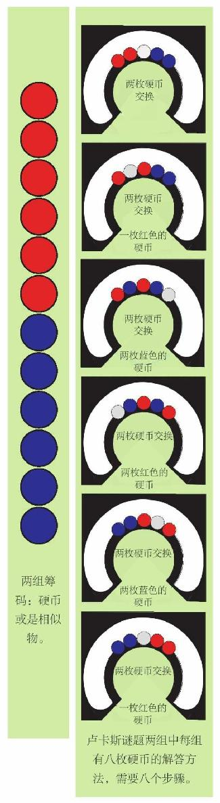
在我九岁生日的那天，我得到了人生中的第一个游戏装置。这个游戏装置有一个木质的底座，上面有七个木桩与两组放在木桩上的圆环（每组三个）：一组是红色的，另一组则是蓝色的，如图所示。游戏的目标就是根据一些简单的原则，将两组圆环位置互换。在当时的我看来，这是非常简单的。但在玩了一小时之后，我放弃了。我得出了结论：这是不可能做到的。
但在几天之后，我又重新去玩这个游戏，并且深深沉浸其中。这个游戏必然是有解的，因为这个游戏的说明书上是这样写的。于是，我下定决心去解开这个谜题。我顽强地面对解答过程中面临的各种困难。一小时后，我突然找到了解开谜题的方法。我感到非常高兴，为自己感到无比骄傲。
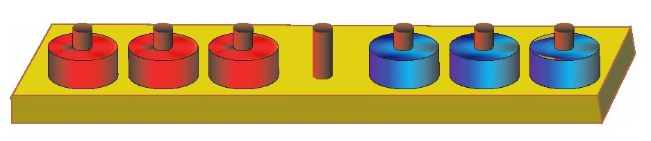
从那时起，我觉得自己是喜欢谜题的。我那个时候不知道的是，这是谜题进入我生活的开始。在解答谜题的过程中，我使用了一种名为“暴力算法”的方法。
我遇到的第一个谜题就是所谓的“卢卡斯谜题”，它是法国著名数学家爱德华·卢卡斯（1842—1891）发明的。他还发明了其他一些著名的消遣数学游戏。卢卡斯的谜题是最早的需要重组筹码，形成某种特殊队列结构的谜题与游戏之一。
之后，当我开始设计与发明谜题与游戏时，我最早的一个发明就是“棘手的按钮”这个游戏。它受到了卢卡斯谜题的基本组合概念的影响，并且扩展到了任意数量的游戏组合。这里的四个谜题都是对卢卡斯谜题的拓展。下一页的游戏板就是为了能在这本书中直接玩这个游戏而设计的。
棘手的按钮游戏
下面一页中四个游戏的目标，就是根据下面的简单规则，通过交换两组筹码（数量分别是3，4，5与6），使之交换位置。
在初始图形里，两组筹码分别是放在左边的红色硬币与放在右边的蓝色硬币，如图所示，要完成交换，需要八步。
规则如下：
1.一次只能移动一枚硬币。
2.硬币可以移动到相邻的空位置。
3.硬币可以跳过与其颜色相反的位置，移动到它相邻的空位置。
4.硬币不可以跳过与其有着相同颜色的硬币。
5.红色的硬币只能向右移动，而蓝色硬币只能向左移动。
要解答每一个谜题，至少需要多少个步骤呢？你能找到一般规律，使其适用于两组任意数量的筹码吗？比方说，要将两组硬币，每组十枚位置互换，至少需要多少步呢？
谜题二
三枚硬币交换
河内塔——1883年
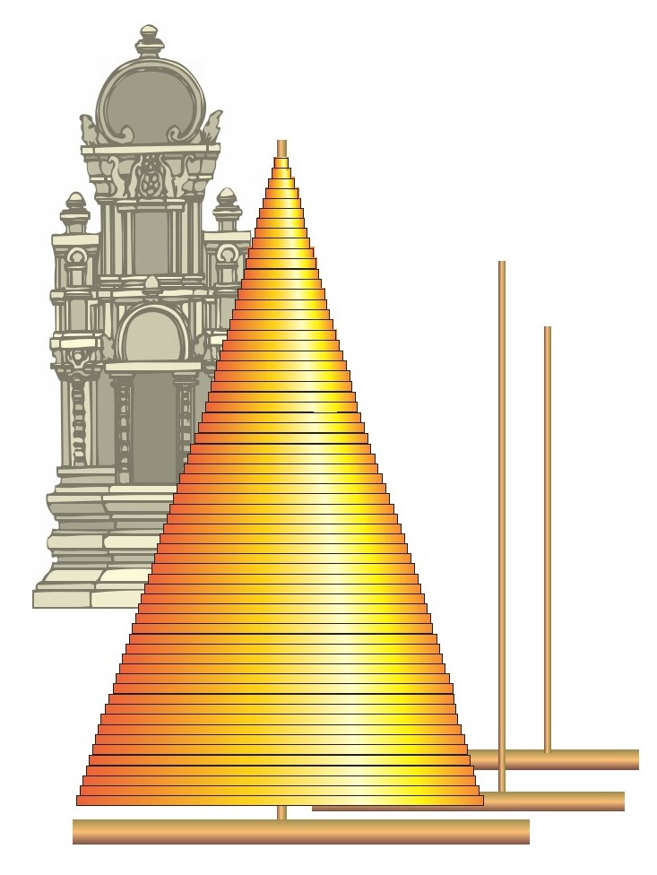
河内塔游戏是最具美感的游戏之一，是法国数学家爱德华·卢卡斯于1883年发明的。
这个游戏源于一个传说：在贝纳尔斯有一座雄伟的宫殿，宫殿里面有一个黄铜盘，上面插着三根大针。一开始，64个黄铜圆盘按照由大到小的顺序套在一根大针上，最大的圆盘放在底部。无论白天还是黑夜，一位祭师都会以相同的速度将一个圆盘从一根大针上转移到另外一根大针上，且不允许任何一个圆盘放在一个比它小的圆盘之上。当这座由圆盘搭建的塔在另外两根大针中的一根上重建的时候，宇宙就会终结。
即便这个传说是真实的，我们也没有任何担心的理由。即使每秒移动一个圆盘，完成这项工作也要花费6000亿年的时间，这个时间大约是太阳寿命的60多倍。在某个较小数量的圆盘上完成河内塔所需的必要步骤为2n-1。因此，两个圆盘就需要三个步骤，而三个圆盘则需要七个步骤，依此类推。
巴比伦
这个游戏是经典的河内塔游戏的一个衍生版本。
你可以选择不同的难度级别，下面给出了几个样板。
如图所示，左边的卡槽里码放着一些圆盘，每个游戏的目标就是将这些圆盘按照相同的顺序转移到右边，数字最大的圆盘要放在卡槽底部。
这四个游戏的目标就是要分别将3、4、5、6个圆盘按照相同的顺序转移到右边的卡槽，数字最大的圆盘放在最底部，越往顶部，圆盘数字越小。记住要遵循下面的规则：
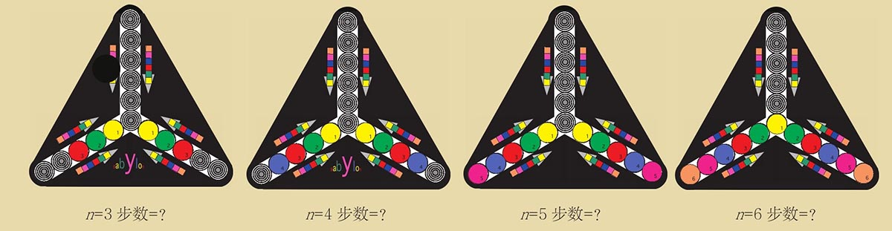
1.一次只能移动一个圆盘。
2.不要将任何圆盘放在一个比它数字小的圆盘之上。
3.可以利用中间的卡槽，但需要遵循第一条与第二条规定。
要想完成这样的转移，你需要走多少步呢？你可以试着完成第一个游戏，然后再去尝试难度更高的游戏。
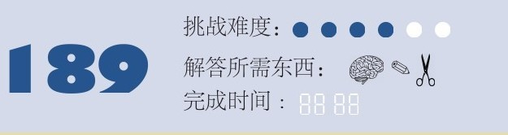
河内塔游戏板
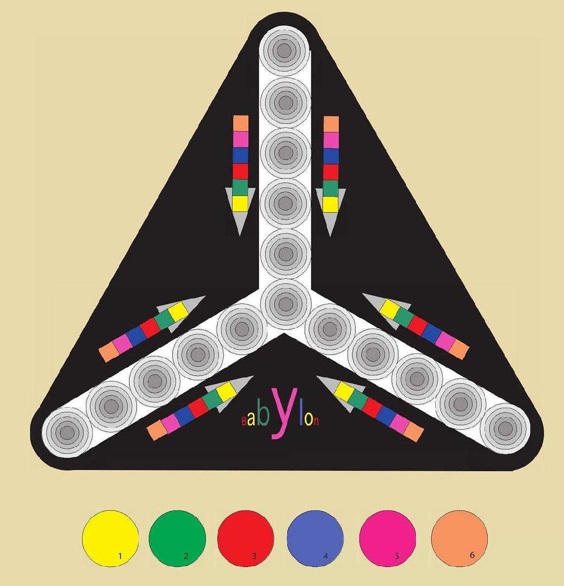
用圆盘或两组小硬币来玩，试着解答上一页的四个谜题。
船只相遇
这一具有美感的问题是19世纪法国著名数学家爱德华·卢卡斯提出来的。这个问题是这样的：在每天中午时分，一艘船离开勒阿弗尔港口，前往纽约；另一艘船则在同一时间离开纽约，前往勒阿弗尔港口。这趟旅程要持续七天七夜。往返于纽约与勒阿弗尔港口之间的船会在这趟旅程中相遇多少次呢？
平原地区与二维世界——1884年
天体物理学家们认为，宇宙是由四维空间组成的——其中三维是空间，剩下一维则是时间——学界最近的一些理论则认为，甚至还可能存在着更高的维度。
我们该怎样去理解这种假想的更高维度呢？要解答这个问题可以通过类比的方式，从我们日常的世界中抽离出来，想象一个二维的世界。
1884年，英国牧师廉科学传播者埃德温·A.阿博特进行了一次激动人心的尝试，描绘了一个二维的世界。在他那本名为《平原地区》的讽刺小说里，里面的人物基本都是几何图形，在一个无限伸展的二维平面上不断滑动。除了这个平面所具有的微不足道的厚度之外，生活在这个平原上的人对于三维空间或三维以上的空间都缺乏认知。
虽然阿博特并没有在书中描述平原地区的任何物理法则与科技创新，但这本书却催生了许多解答这些问题的方法。与此相关的一本书名为《平原地区的一个章节》，是查尔斯·霍华德·欣顿在1907年写的，这本书巧妙地拓展了阿博特之前的想象。
欣顿书中的一切动作，显然都发生在一个名为阿斯特里的二维星球上。阿斯特里星球只是一个巨大的圆，上面的居住者都住在圆周上，并且始终面对着同一个方向。所有的男性都面对着东方，所有的女性都面朝着西方。每个人要想看到背后的东西，就必须向后弯曲、倒立，或利用一面镜子。
阿斯特里星球上有两个国家，尤纳尼安是一个文明国家，位于这个星球的东方；而野蛮的国家塞西亚则位于星球的西方。这两个国家爆发了战争，赛西亚人拥有巨大的优势，能够从背后袭击尤纳尼安。无助的尤纳尼安人民被迫退回到一片临海的狭小区域。
在种族灭绝的危险时刻，一项科技发明拯救了尤纳尼安人民。他们的天文学家发现这个星球是圆的。于是，一队尤纳尼安士兵穿越大海，对塞西亚军队发动了突然袭击，结果打了塞西亚军队一个措手不及，因为他们根本想不到对方会从后方发动袭击。就这样，尤纳尼安人民击败了他们的敌人。
阿斯特里星球上的房子只有一个大门，管道与水管都是不存在的。绳索也无法系在一起，只有杠杆、钩子与钟摆能够使用。
平原地区的等级制度
阿博特在他的《平原地区》一书里呈现了一个二维的数学世界。
·女性是一条锋利的直线。
·士兵与工人是等腰三角形。
·中产阶级是等边三角形。
·专业人士是正方形与五边形。
·上层人士从六边形开始，一直到圆形，这些人是平原地区的高级牧师。
若是从后面看的话，女性是根本看不见的，而且存在着相互碰撞的高度危险。因此，法律规定女性只能永远扭曲蠕动，好让别人能够看到她们。
平原地区的灾难
想象一下，生活在二维世界里具有智慧的外星人被限制在一个叫“平原地区”的二维表面上。这些外星人不仅身体被限制在平原地区，就连感官上也是如此。他们没有任何能力感觉二维世界之外的其他东西。
每隔一万年，一个三维的巨大陨石立方体就会撞上这个二维表面，并将之击穿。生活在平原地区的外星人将会经历怎样的天文灾难呢？
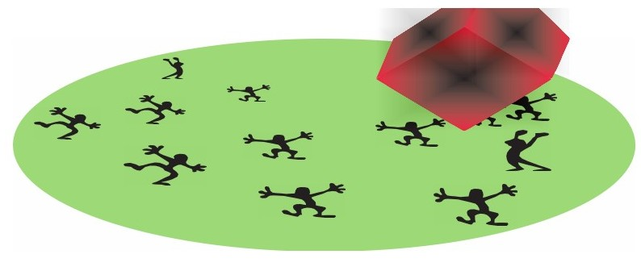
立方体切割——1885年
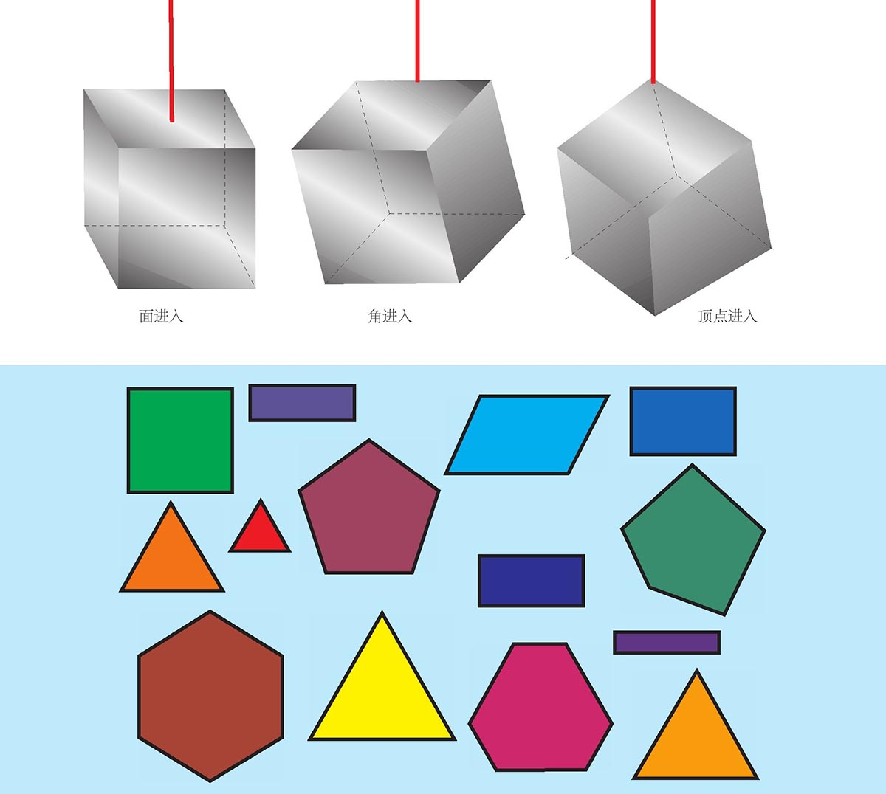
1880年，历史上第一个提出幼儿园概念的发明家弗德里希·福禄贝尔（Friedrich Froebel）强调了让幼儿玩几何游戏的重要性。
当一个球体穿过一个平面，就像阿博特提到的平原地区一样，我们很容易就能想象到这样的穿透次序：点，不断增大到极限的圆形，接着又回归到之前的状况，不管是从哪一点切入的。
但如果面对的是一个立方体，又会出现怎样的情形呢？当一个立方体穿过一个平面时，又会创造出什么形状呢？上面所示的图形都可以通过立方体切割一个平面得到吗？
附加题：你该怎样切割一个四面体，才能获得一个方形截面呢？
约当曲线定理——1887年
所谓的约当曲线就是在一个平面上，一条非自相交的连续线圈，这是一个简单的封闭曲线的别称。
约当曲线定理认为，每一条约当曲线可以将平面分为一个被曲线围起来的“内在”区域与一个能够包含附近或远处外在点的“外在”区域，因此，任何一条连接不同区域中两个点的连续路径都会与约当曲线在某处相交。
约当曲线定理认为，如果一个点在任意一个方向上形成的直线交叉数都是奇数的话，那么这个点就在简单封闭曲线内部。虽然这一定理的阐述看上去是不证自明的，但是要想通过基本的数学方法去进行证明却并不容易。更为明晰的证据依赖于代数拓扑学工具，利用这些工具可以让我们对更多维度的空间进行概括总结。
约当曲线定理是以数学家卡米耶·约当（Camille Jordan，1838—1922）的名字命名的，他是第一个证明这个定理的人。长期以来，他的证明都被认为是不成立的，不过，这种观点近年来已受到了挑战。
对于光滑曲线来说，显然如此。但是，曲线也可以是非常复杂的。在这种情况下，这一定理就不适用于科赫雪花那样的曲线了。
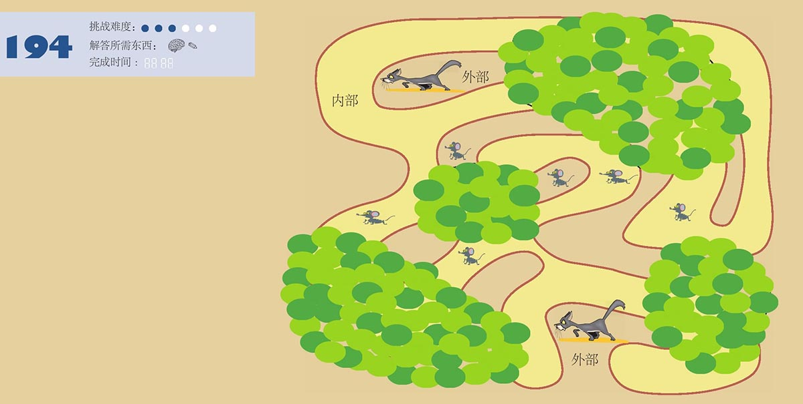
猫和老鼠
花园被一个不相交的弯曲的栅栏分为了两个区域——一个是内部的区域，一个是外部的区域。花园的某些部分是可以看到的，而其余的部分则被树木所遮挡。
约当曲线定理在这种情况下是否依然适用呢？
两只想要捕捉老鼠的猫都在栅栏外面。它们无法跨越栅栏。请问，有多少只老鼠会被猫捉到呢？
贝特朗悖论——1888年
1888年，约瑟夫·贝特朗（Joseph Bertrand，1822—1900）在他的著作《概率计算》一书里提出了一个关于概率论的经典而重要的问题：如果产生随机变量的方法不明确，那么概率也不可能明确。
他提出的问题是这样的：以一个圆的内切等边三角形为例，如果我们随机选择一条弦，那么这条弦比三角形的一条边更长的概率是多少呢？
贝特朗就选择随机弦提出了三个论点，这三个论点都是合理的，但却会推导出不同的结果，这就产生了一个以他名字命名的悖论。因为并不是什么独一无二的选择，因此当然也不可能找到独一无二的解决方案。只有当随机选择的方法被明确规定之后，我们才能找到解决这个问题的方法。我们可以对三种不同的选择方法进行解释，也可以进行视觉化的呈现。
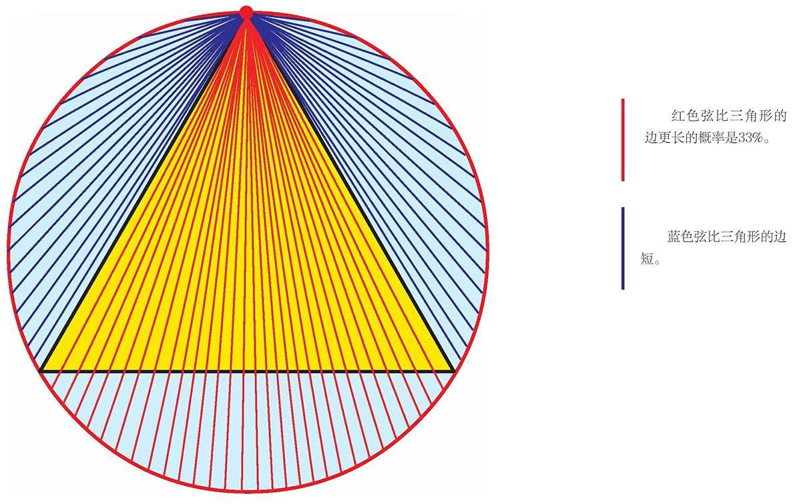
解法一：随机端点方法
在一个圆的圆周上随机地选择两个点，其中一个点刚好与三角形的一个顶点重合。如果弦上的其他点都落在三角形另外两个顶点之间的弧上，那么这条弦就比这个三角形的边更长一些。弧长是圆周长的三分之一，所以随机选择的一条弦的长度比三角形一条边更长的概率是33%。
解法二：随机半径方法
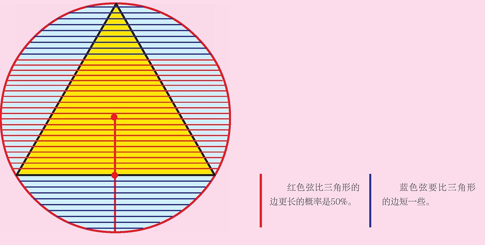
选择一条半径将三角形的一条边二等分。在半径上选择一个点，以此作一条经过该点的弦，使它与这条半径垂直。
如果选择的点比三角形一边与半径相交的点更接近圆心，那么弦的长度就要长于三角形的边长。因此，随机选择一条弦比三角形一条边更长的概率是50%。
解法三：随机中点方法
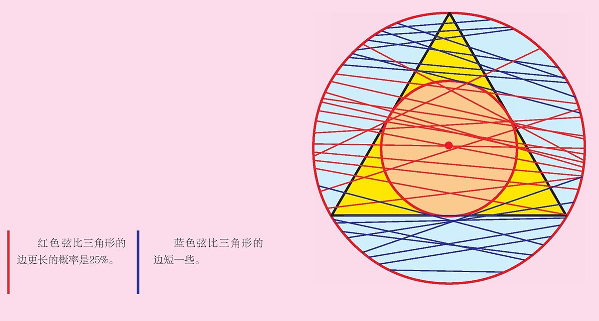
在圆内随机选择一个点，以这个点作为中点，作出一条弦。
如果选择的点落在一个半径为大圆半径二分之一的同心圆上，那么这条弦的长度就要比三角形的边更长一些。较小圆的面积是较大圆面积的四分之一，因此概率就是25%。
超正方体与超立方体——1888年
在几何学上，超正方体是立方体在四维空间里的模型。超正方体之于立方体，就好比立方体之于正方形。正如立方体的表面是由六个正方表面组成的，超正方体的超级表面则是由八个立方体组成的。
超正方体是六凸正则四胞形。超过三个维度的立方体被称为“超立方体”，或“n立方体”。
超正方体是四维的超立方体，又称为四立方体。
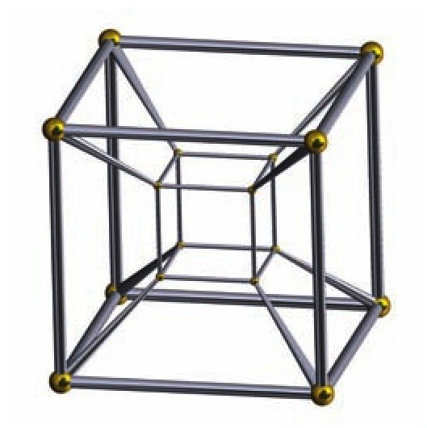
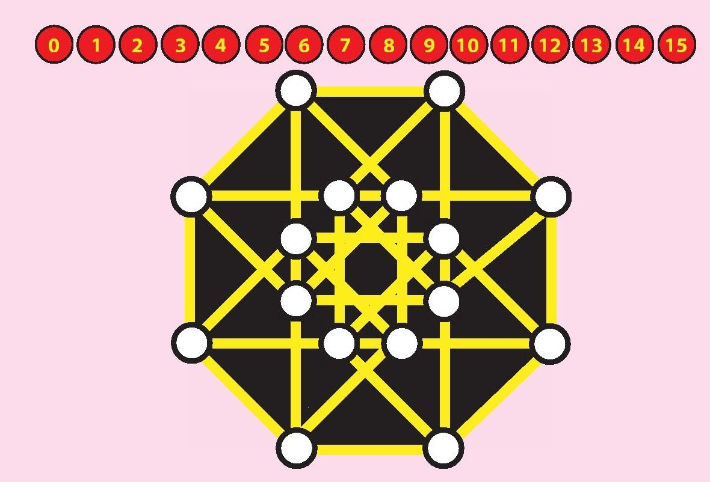
超正方体谜题
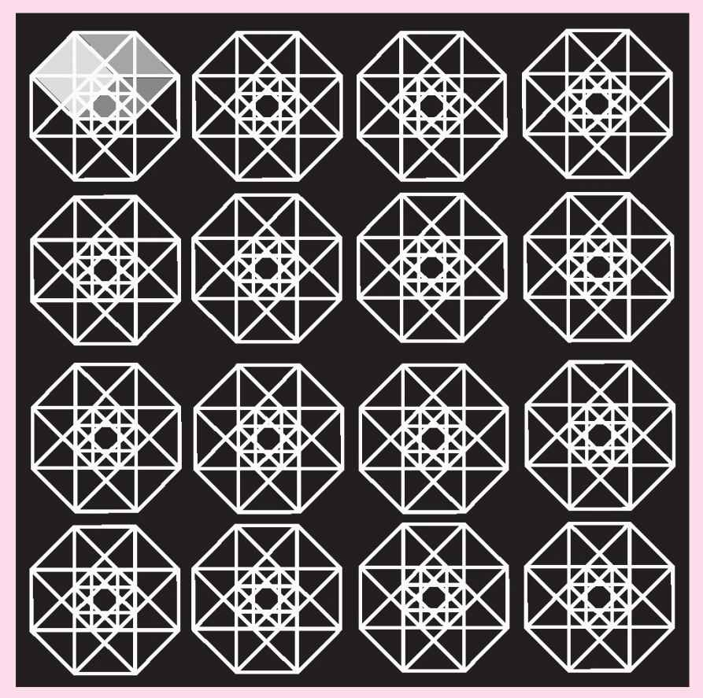
谜题一：在一个超正方体里，一共有多少个角、多少条边、多少个面与多少个立方体呢？
谜题二：将0到15的数字填入上面的超正方体的顶点圆内，使骨架立方体上正方形面的数量能够达到30个。
谜题三：如图第一个超正方体所示，你能从左边的二维图形里找到多少个骨架立方体？
亨利·珀里加尔的爬行正方形——1891年
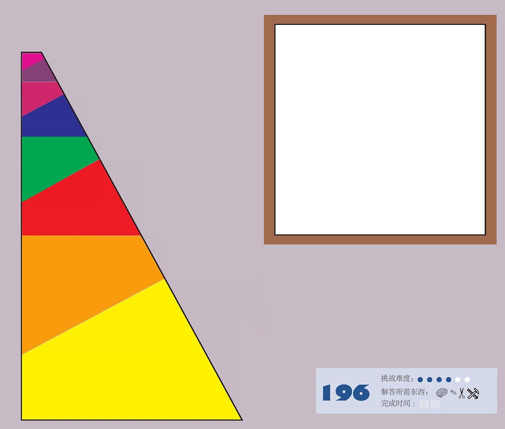
复制并剪切出一个被截断的三角形的八个部分，然后将它们重新组装成一个完整的正方形。
亨利·珀里加尔（1801—1898）
亨利·珀里加尔是一位英国业余数学家，伦敦数学协会1868年到1897年的会员，因他对毕达哥拉斯定理进行的基于剖分的证明而闻名于世。在他的《几何剖分与移项》（Geometric Dissections and Transpositions）一书里，珀里加尔通过对两个较小正方形进行剖分，使之变成一个较大的正方形，从而证明了毕达哥拉斯定理。他发现的五块式剖分可以通过重叠一块方砖的方式，用两个较小正方形组成的毕达哥拉斯瓷砖铺成一个较大的正方形。
珀里加尔在同一本书里也表达了这样的希望，即基于剖分的思想同样能够解决化圆为方这个古老问题，然而，在1882年，林德曼-魏尔斯特拉斯定理已经证明，这个问题是不可能解决的。
点肖像
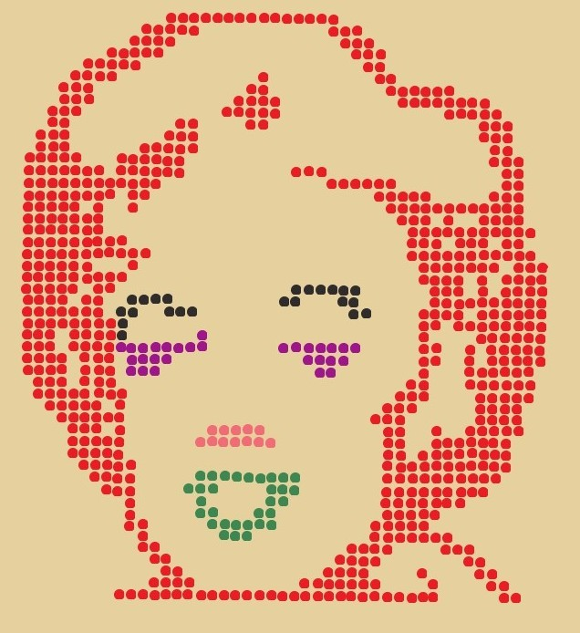
需要多少个点才能做出一幅神似玛丽莲·梦露的画像？粗略估计一下，然后看你是否能用不多于25个点做到。
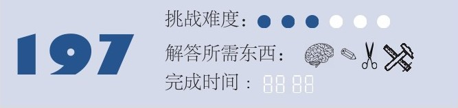
一个圆内的200万个点
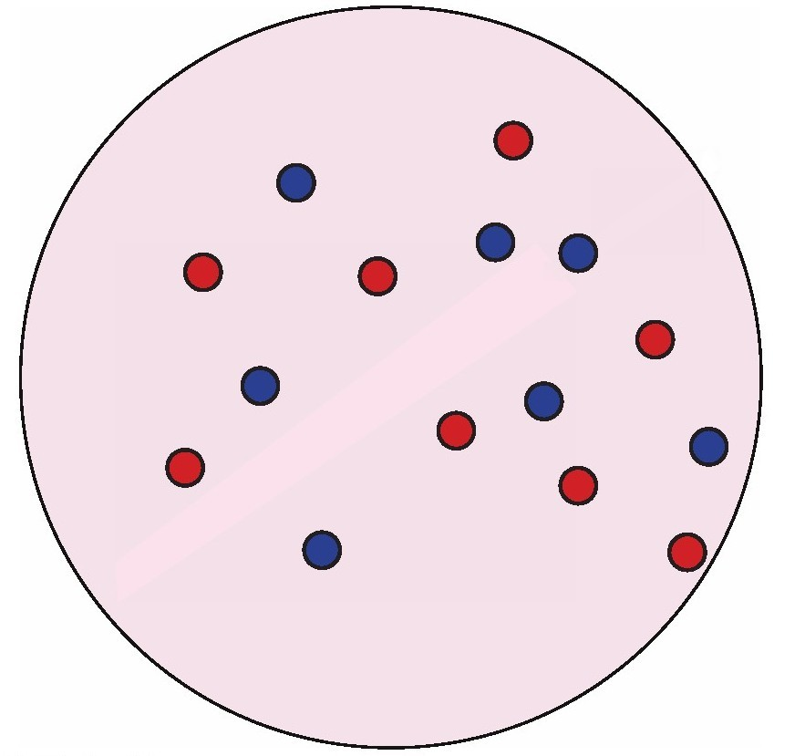
想象一下，在这个圆内刚好有一个随机的200万个点的集合，但是以目前的放大程度，你无法看到它们。是否存在一条经过圆的直线，刚好将这200万个点二等分呢？你能找到一种理论依据、一种思维实验来解决这个问题吗？
西尔维斯特定理——1893年
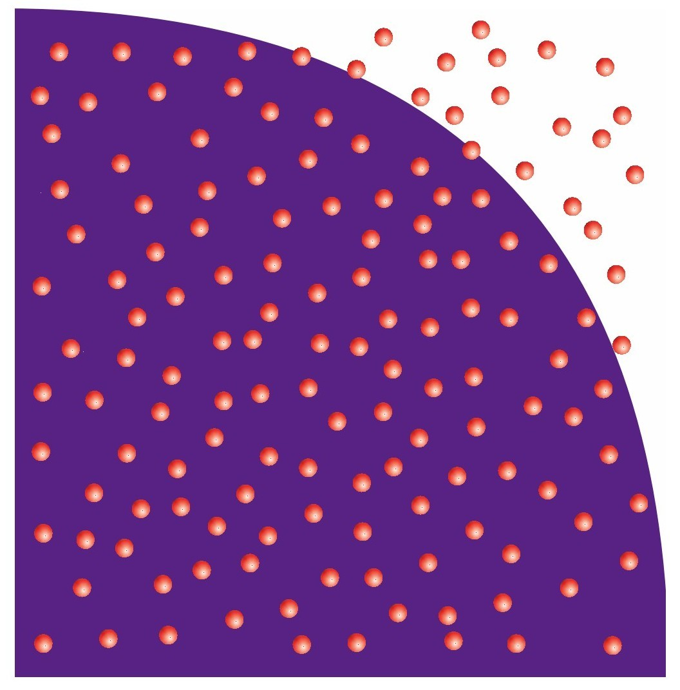
如图所示，你能找到一条直线穿过该图，让直线两边的点的数量都相等吗？
1893年，詹姆斯·约瑟夫·西尔维斯特（1814—1897）提出了一个猜想：在一个平面上分布着有限数量的点，那么至少有一条线上刚好有两个点（否则所有的点都会在相同的一条直线上）。1944年，这个猜想被匈牙利数学家蒂博尔·加莱证明。
西尔维斯特定理就是今天著名的以证明形式呈现出来的西尔维斯特-加莱定理，这条定理是这样阐述的：给定有限数目的点，如果过任意两点的直线都经过第三点，则所有点共线。
六角幻方
有关幻方的内容已经有很多了，但是幻方不仅与正方形相关，而且还与其他多边形相关，比如，三角形、六边形、圆形、五角星形以及其他多边形。
谜题一：二阶六角幻方有可能存在吗？换句话说，将1到7的数字分别填入六角图中所示的圆圈里，使两层的六角图中任意一条直线上的数字之和都等于同一个数，能否做到？可以告诉你们，无论你以怎样的方式去安排这些数字，这个问题都是无解的。二阶六角幻方显然是不可能存在的。你能找到它不可能存在的证据吗？
[此书分享微信wsyy5437]谜题二：另一方面，三阶六角幻方则如图所示。
六角幻方谜题——1895年
1895年，威廉·拉德克利夫在经过大量的试错之后，终于发现：将数字1到19分别填入由19个六角形组成的图形中，让每一行中三个、四个或五个六角形中的数字之和都等于38，这是可以做到的。1963年，查尔斯·特里格证明了，这是唯一一种可以是任何尺寸的六角幻方。
拉德克利夫的六角幻方是一个独特且让人惊讶的数字模型谜题。你能将从1到19的数字填入六边形的棋盘里，使任意一条直线上的数字总和都等于38吗？
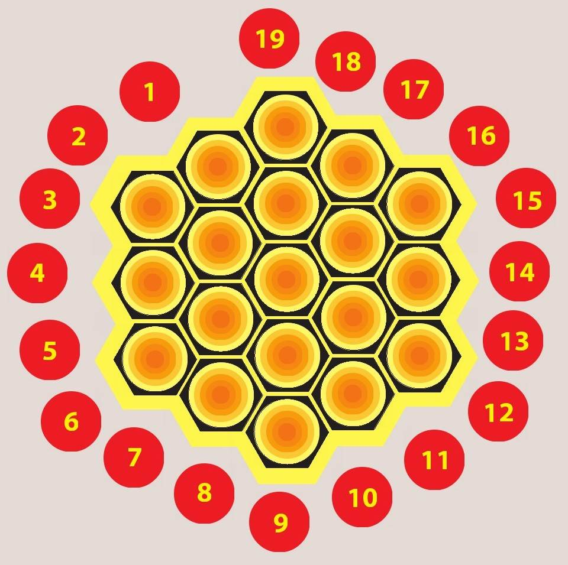
皮克定理——1899年
假设你有一个简单的格点多边形（这是指没有自相交也没有“洞”的多边形），并且多边形的每个顶点都在一个正方网格里，如图所示。
我们的目标就是要计算出被多边形包围的区域的面积。我们可以先将多边形划分为多个部分，将每个部分的面积相加，就可以得到整个多边形的总面积（我用这种方法得到了84.5平方单位的面积）。
但是，还有一种具有美感的简单方法可以计算出这个多边形的面积，即利用皮克的精彩公式。皮克定理提供了一种优雅的捷径，可以得到一个简单格点多边形的面积。
皮克定理——格点多边形的面积：A=i+b/2-1，这里，i=内点（蓝色点）的数量，而b=边界点（红色点）的数量。利用皮克的公式，可以得到这个区域的面积是84.5平方单位，这与我们之前的计算结果是一样的。
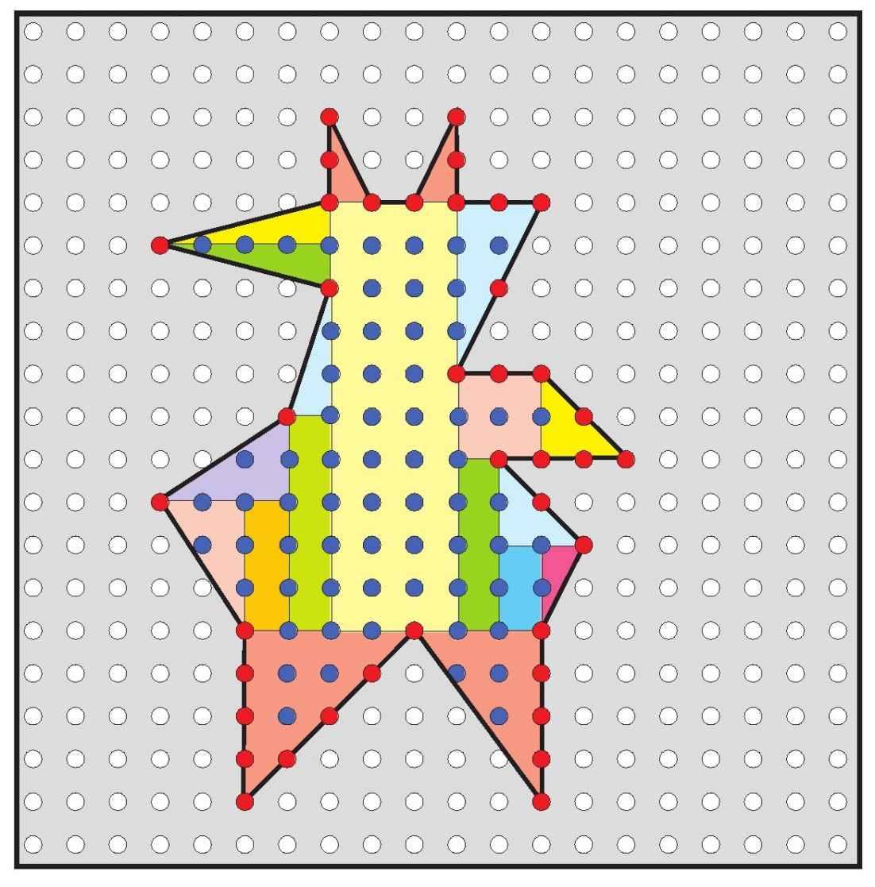
乔治·亚历山大·皮克（1859—1942）
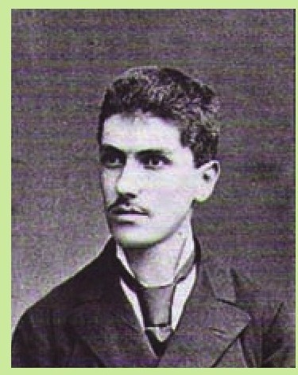
乔治·亚历山大·皮克是一位奥地利数学家，作为纳粹政权的受害者，皮克于1942年死于特来西恩斯塔德集中营里。皮克以计算格点多边形面积的公式而闻名于世。他在1899年的一篇文章里发表了这个理论，但这个理论是在雨果·斯坦豪斯将其收录到他的《数学速览》一书中之后，才逐渐为世人所了解的。
——乔治·亚历山大·皮克
——乔治·亚历山大·皮克
三角形的内等分角
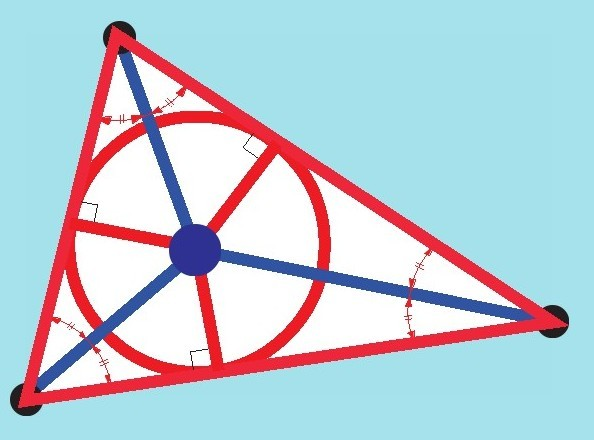
欧几里得证明了，在一个三角形内，任意两个角的二等分线的交点，距离三条边的距离都是相等的。这一点就是三角形内切圆的中心，叫做内心。
一个相关的问题就是，一个三角形的三等分线是如何相交的呢？但是，这个问题要等上两千多年，直到莫利提出了三等分线定理才找到解决办法。
莫利定理——1899年
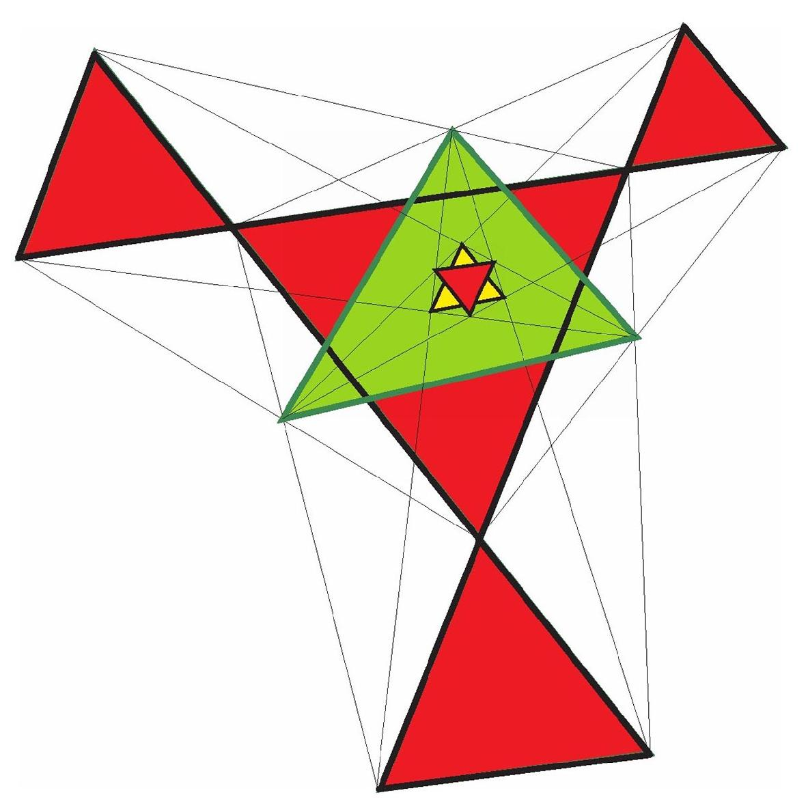
1899年，英国数学教授弗兰克·莫利（Frank Morley，1860—1937）发现了一个具有美感的定理，该定理揭示了几何学上一个让人感到震惊的关系。
他的定理是这样阐述的：将三角形的每个角三等分，相邻两个角的三等分线的交点连在一起，就能生成一个等边三角形。
以任意一个三角形（绿色）为例，将每个角三等分，然后将相邻两个角的三等分线的交点连接起来，那么你将会得到一个等边三角形（红色）。
情况总是如此吗？
你可以用任意形状的三角形去尝试。请注意，六个三等分点会形成六个内交点。将另外三个交点连接起来，另一个三角形就形成了。这一次形成的三角形不是等边三角形。这是第二个莫利三角形（黄色）。
总的来说，莫利定理是指，将内角的三等分线都考虑在内的话，会再生成四个等边三角形，如图所示。
地图着色问题——1890年
著名的四色定理直到最近才被电脑解答。来自南加州大学的赫伯特·泰勒注意到，地图着色这个问题推而广之就是对地图上m个彼此分割的国家或区域进行着色的问题。
当一个国家的所有区域都必须用同一种颜色去着色时，那么至少需要多少种颜色对这张地图进行着色，才能使两个有共同边界的区域不会有相同的颜色呢？按照上述说法，四色问题其实是m=1时的一个特例。此时正好需要四种颜色。
有趣的是，当m=2的时候，这个问题其实在1890年就已经被数学家珀西·约翰·希伍德（Percy John Heawood，1861—1955）证明了。他是第一个证明对地图着色不需要6种以上颜色的人，他还做了一份m=2时用12种颜色着色的地图。右图就是希伍德制作的地图。你能用12种颜色去着色吗？这个地图已经部分着色，你可以接着涂色。
珀西·约翰·希伍德（1861—1955）
珀西·约翰·希伍德是一位英国数学家，曾在牛津大学接受教育。他几乎将自己的一生都投入到对四色定理的研究当中。1890年，他发现艾尔弗雷德·肯普（Alfred Kempe）的证明方法存在着一个漏洞。在这之前的11年里，肯普的证明方法被认为是正确的。既然四色定理备受争议，他于是选择了研究五色定理。1976年，通过电脑计算，人们终于找到了四色定理的证明方法。
G. A.狄拉克在《伦敦数学协会期刊》上发表的一篇文章里这样写道：“从他（希伍德）的形象、举止与思维习惯上看，他是一位极不寻常的人。他留着浓密的胡须，身体消瘦，有点驼背。他经常披着一条古怪的具有复古气息的披肩，提着一个古典的手提包。他的步伐是优雅且匆忙的。他的身边经常会有一只狗相伴，甚至在他发表演说时也是如此。他为人非常坦率、虔诚，充满善意。他那糅合着天真质朴与精明古怪而有趣的性格，不仅让他吸引了很多人的兴趣，还赢得了同事的敬仰与尊重。
他喜欢到乡村玩耍，他的一个兴趣爱好是希伯来语，这对数学家来说并不常见。他的绰号是‘猫咪’。杜伦大学每年都会向那些取得优异数学成绩的毕业生颁发希伍德奖。”
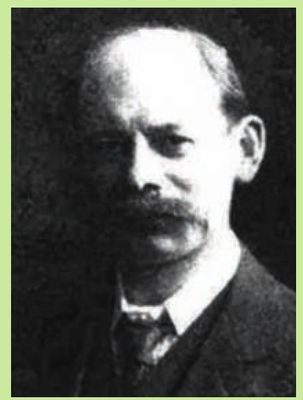
多米诺组
三角形、正方形与立方体的边、顶点、面与角都分别用两种、三种、四种与六种颜色去着色——创造出颜色完全不同的广义多米诺组。这个游戏的目的就是找出每组中不同的多米诺骨牌的数量，然后将完整的多米诺组放入不同形状与大小的游戏盘上，并且要符合多米诺的基本原则——每一对接触面都必须有相同的颜色。
彩色三角形
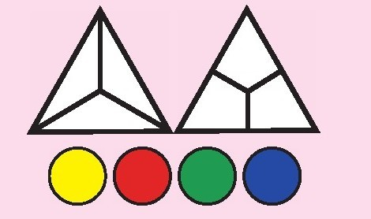
如图所示，一个三角形被划分为三个部分。用四种颜色对三角形的边或顶点进行着色，你能够创造出多少个不同的三角形呢？
彩色正方形
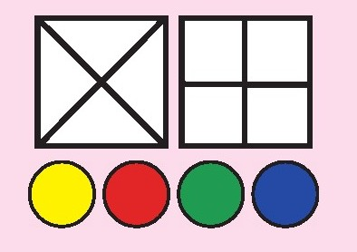
如图所示，一个正方形被划分为四个部分。用四种颜色对正方形的边或顶点进行着色，你能够创造出多少个不同的正方形呢？
彩色六边形
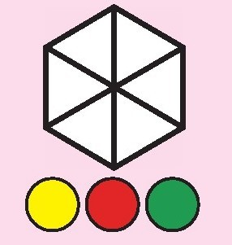
如图所示，一个六边形被划分为六个部分，用三种颜色对每条边进行着色，你能创造出多少个不同的六边形呢？
彩色立方体
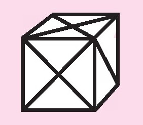
你有多少种放置立方体的方法，从而让这个立方体占据相同的三维空间呢？
二色、三色与六色立方体
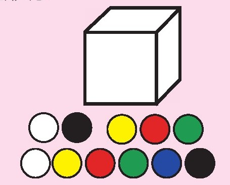
一个立方体的每个面都用两种、三种或六种颜色去着色。你能够创造出多少个二色、三色与六色立方体呢？
二色角锥与棱柱
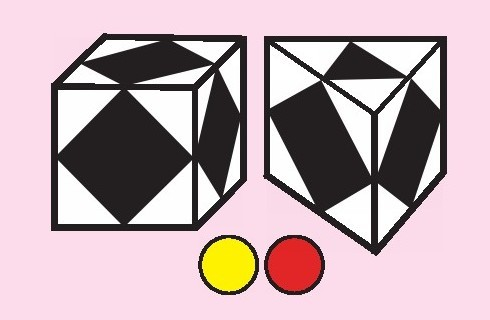
若是只用红黄这两种颜色给一个立方体与三棱柱的角着色，有多少种不同的着色方式呢？
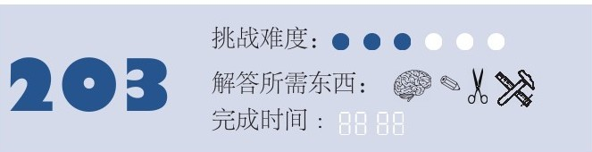
麦克马洪的广义多米诺——1900年
经典的多米诺游戏其实就是一个线性的数字游戏。添加颜色或更为复杂的形状（包括三维的立方体），就能够创造出有趣的组合游戏（有关组合数学的美感问题，可以参考第4章的内容）。
亚历山大·麦克马洪（Alexander MacMahon，1854—1929）发明了多种类型的多米诺游戏，其方法就是将多边形瓷砖平铺在平面上，并且以对称的方式去着色。
麦克马洪的瓷砖组并不是任意摆放的：相同形状的瓷砖被以各种可能的方式去着色，形成一个完整的瓷砖组，保证没有任何两块瓷砖是一样的。镜像被认为是不同的，但是旋转则被视为是相同的。这是一种很自然的假设，因为瓷砖通常都只是一边着色，因此它们不可能翻转，但在平面上却可以没有任何难度地转动。这个游戏的目的就是根据多米诺原则，按照已有的几何或对称模式，摆放好一组完整的瓷砖。
麦克马洪的数学工作基于对称函数理论，即使其中的字母发生置换，代数表达式也不会发生改变。比方说，a×b × c与ab× bc × ca都是a, b，c的对称函数。如果一个完整的麦克马洪多米诺组的颜色发生了置换，我们还是会得到与之前颜色完全相同的瓷砖。这些多米诺组合所具有的美感是从这种深层次的置换对称中衍生出来的。直到如今，麦克马洪提出的思想依然为我们发明全新的拼图游戏提供了许多探索的空间。
30个彩色立方体
珀西·亚历山大·麦克马洪引入了广义的多米诺骨牌的概念，将标准的多米诺骨牌延伸到镶嵌平面的多边形上，通过添加颜色与限制多米诺骨牌的数量，从而完成一个组合的形态。
他的经典多米诺组合包括30种颜色的立方体，这是他在1893年提出的，可以说是消遣数学领域里的一颗明珠。它基于以下这个问题：如果你给一个立方体的六个面都涂上不同的颜色，对所有的立方体都使用同一组颜色，你能够得到多少种不同的立方体呢？
旋转并不被视为不同，但是镜像却被视为不同。右图是30个立方体形成的网状结构。你能够利用6个颜色（或从数字1到6）创造出30个有颜色的立方体吗？
一种单调枯燥的方法就是找到这6种不同颜色或数字的720种可能的排列置换。因为你能够把立方体放在24个不同的方向上，因此每个立方体就有24种外观，这样，不同立方体的数量能达到30。但是，一个更好的方法就是通过系统的方式对立方体进行着色。
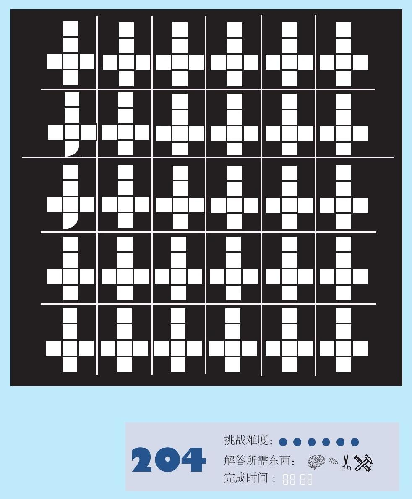
伊凡的立方体
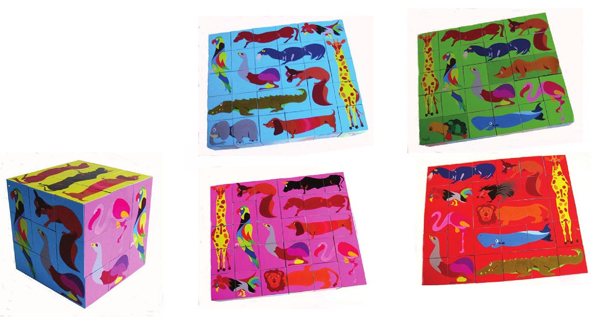
麦克马洪具有原创性的立方体可以进行改良，拓展该游戏使其适合所有年龄段的人玩，甚至很小的孩子都能玩。
铰接多边形——1902年
将一个等边三角形切割成四个部分，然后将这四个部分重新组装起来，形成一个正方形。这就是亨利·杜登尼于1902年首次发表的“杂货商拼图”游戏。
这个游戏的解答方法有一个显著特征，就是三角形的每一个部分都以铰链的形式固定在一个顶点上，按顺时针方向能够组装成原来的三角形，按逆时针方向能够组装成正方形。
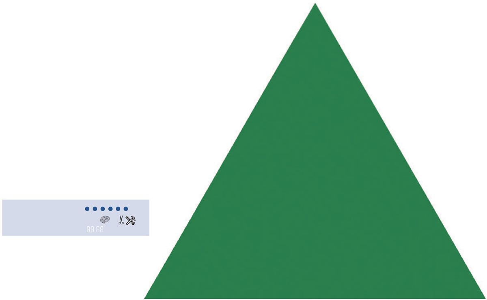
亨利·欧内斯特·杜登尼（Henry Ernest Dudeney，1857—1930）
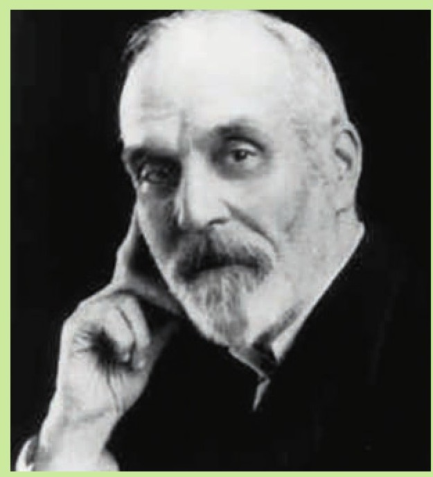
亨利·欧内斯特·杜登尼是一位作家兼数学家，英国最伟大的发明家与谜题创作者。杜登尼认为，解答谜题是一种创造性的活动，对于提升人类的思考与逻辑判断能力具有极为重要的意义。他最重要的数学成就就是发现了被称为“杂货商拼图”的剖分谜题，即用几条直线将一个等边三角形切割成四个部分。
杜登尼的邮票问题——1903年
亨利·欧内斯特·杜登尼的经典邮票问题是与多联骨牌，特别是五个四联骨牌相关的最早问题之一。购进一批邮票，这些邮票有三排，每排四枚，组成如图所示的长方形。这个游戏的目的就是将四枚邮票撕下来，然后沿着它们的边拼接起来。按下图几种拼法去拼，各有多少种不同的拼接方法？将不同拼法的数值填入下面的空格中。
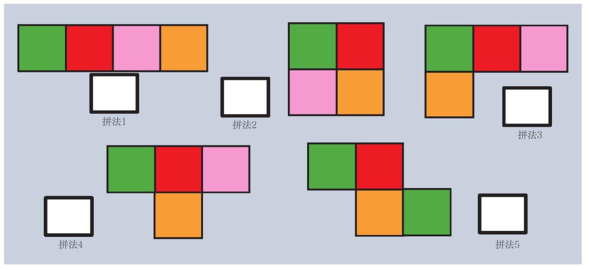
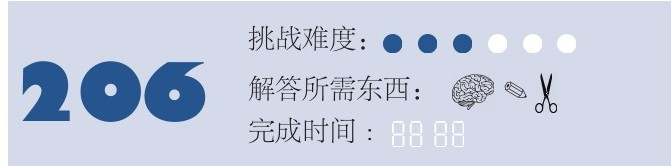
自作聪明的家伙——1903年
移走一个等腰三角形、一个正方形四分之一的部分，就形成了一个凹面五边形，这个凹面五边形可以分割为四个部分，重新组装成一个正方形。山姆·劳埃德提供了一个存在缺陷的解答方法——这样的“正方形”其实是一个长方形。到目前为止，我们还没有找到四个部分重组的解答方法。杜登尼找到了五片重组法，很好地解答了这个问题。
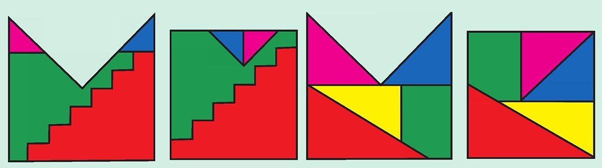
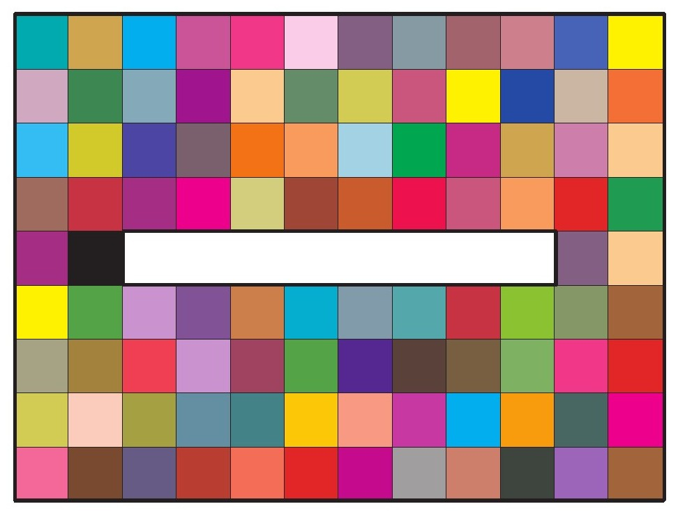
杜登尼的棉被
好看的棉被一开始是由许多大小相同的方块缝制而成的。中间八个方块损坏了，必须裁掉，留下一条长长的洞口。你能够沿着方格网将其切分为两个部分，使这条棉被可以缝合在一起而不会留下任何洞口，实现修复的目的吗？
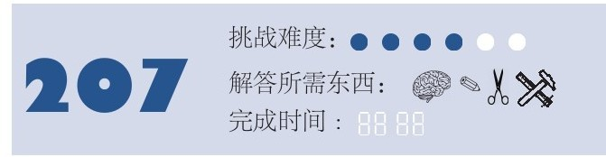
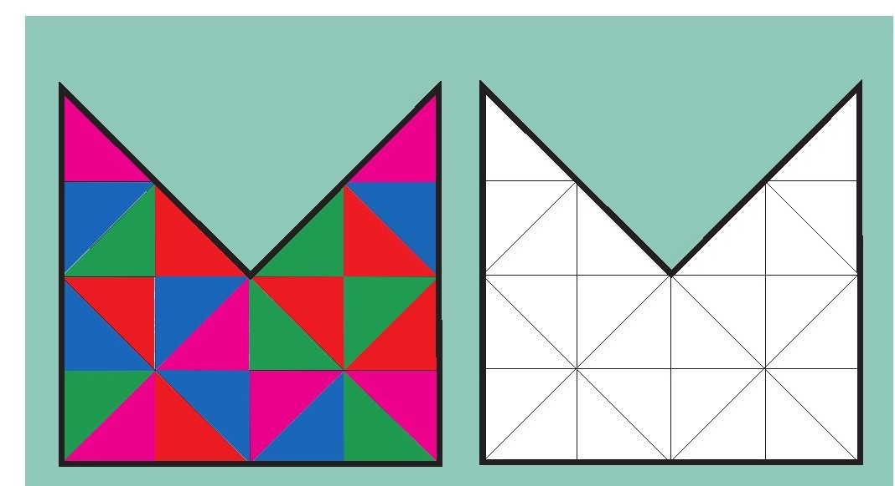
斜方拼图
在斜方拼图里，劳埃德用四种颜色将凹面五边形分为24个大小完全相等的三角形，如图所示。
你能对五边形内的三角形进行重组，从而做出四个完全相同的拼接图形吗？要求：四个图形中的每一个图形都必须涂与其他图形不同的颜色，这些图形也必须是全等的，即便它们是彼此进行镜像或旋转的结果。
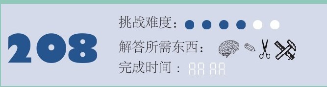
最小的完美长方形——1903年
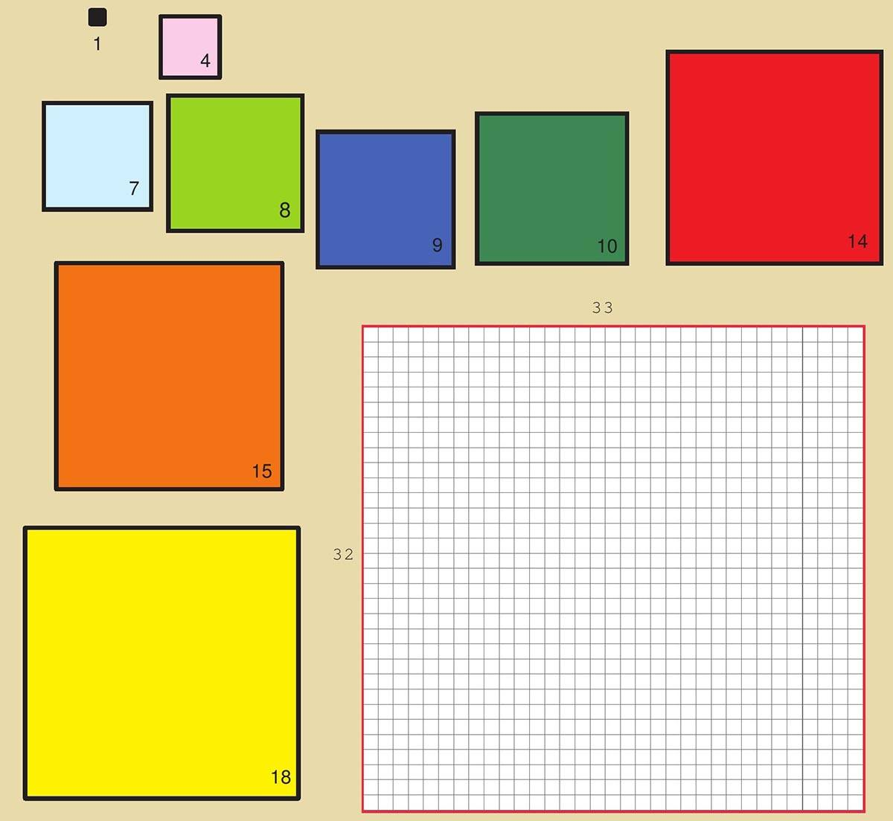
一个长方形能被细分成若干个更小的正方形，且没有任何两个正方形的大小是完全相同的吗？1903年，马克斯·德恩（Max Dehn）证明了这个定理，即如果一个长方形被分割成若干尺寸不等的正方形，那么这个长方形本身就具有可公度性——即某个数字的整数倍。
选择一个测量单位，使基础正方形的每条边的长度都是整数。
1909年，Z.莫伦发现一个长方形可以切割成九个大小不同的正方形。1940年，图特、布鲁克斯、史密斯与斯通等数学家证明这个长方形是“最小”的，就是指没有更小的长方形能够被分割为九个大小不同的正方形了，而且也根本不存在能够被切割为八个或八个以下大小不同的正方形的长方形。
最小的完美长方形由边长为下列数字的正方形组成：1-4-7-8-9-10-14-15-18。
这是一个32×33的长方形。你能用九个不相互重叠的正方形组成一个最小的完美长方形吗？
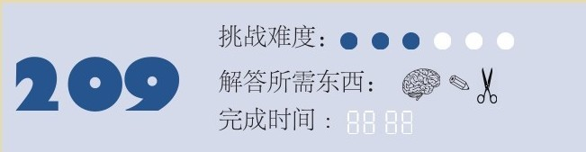
雪花曲线与反雪花曲线——1904年
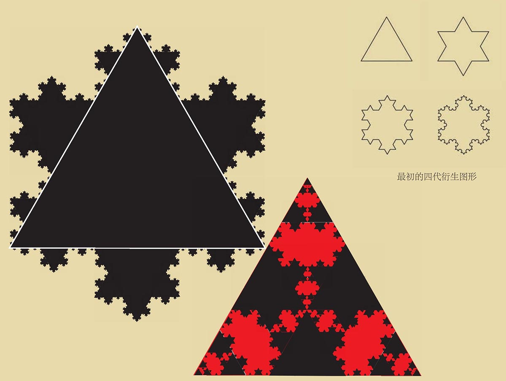
黑色与红色的图形显示了著名的雪花曲线与反雪花曲线最初的四代衍生图形，这些雪花曲线又被称为科赫分形。假设有一个等边三角形，每条边的长度都是单位长度。在每条边中间的三分之一处都添加（或减去）一个边长为其三分之一的等边三角形，然后重复这个过程。
当这个过程无限延续下去的时候，你能计算出这条曲线的长度以及这条曲线所包围的面积吗？这些曲线基本呈成长模式，创造出一系列多边形。是否存在类似雪花曲线的三维物体呢？
雪花曲线以及与此相似的所谓病理曲线证明了一个重要的原则：那就是复杂的图形是可以通过对非常简单的规则的重复运用得到的。
这样的形状就称为分形图。雪花曲线是数学家黑尔格·冯·科赫（Helge von Koch）于1904年发现的，这种曲线是最早发现的分形图之一。
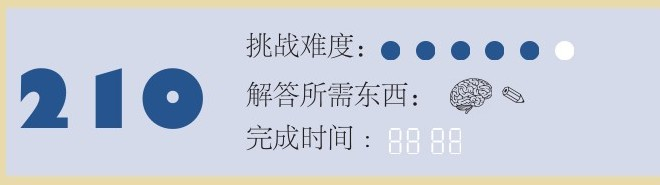
随机漫步——1905年
所谓的随机漫步，就是用数学形式展示由一系列随机步伐所形成的轨迹。比如，一个分子在液体或气体里前进的路线，动物觅食所走的线路，股票价格的升降以及一位赌徒的金融状况都可以视为一种随机漫步模型。
随机漫步这个名词是卡尔·皮尔逊（Karl Pearson）在1905年提出来的。现在，随机漫步的理论已经在多个领域内得到了运用：生态学、经济学、心理学、计算机科学、物理学、化学以及生物学。随机漫步理论能够解释这些领域内观察到的行为过程，因此是记录随机活动的一个基本模型。
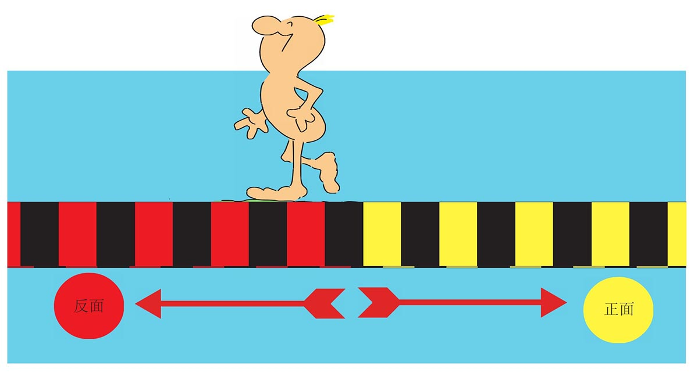
投掷硬币
在这个游戏里，你需要多次投掷硬币。如果落下的硬币是正面朝上，那么走路的人就朝右走一步，如果落下的硬币是反面朝上，那么他就要向左走一步。
在投掷36次硬币之后，你能猜到这个人离他出发的位置有多远吗？在猜想之后，你再投掷36次硬币，然后检查自己的预测是否正确。
你能计算出这个人走到某个点上再回到出发点的概率是多少吗？（假设这种走路方式无限地持续下去。）
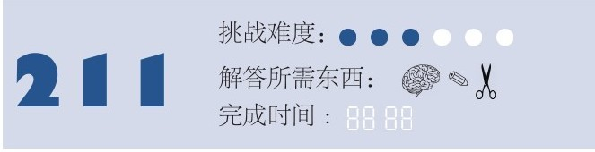
——巴鲁赫·斯宾诺莎
醉汉的随机漫步——1905年
一名醉汉在进行随机漫步，他从位于中央位置的灯柱出发，他要前进的方向受制于两枚硬币的投掷结果（一枚硬币是红色的，一枚是黄色的），如图所示。这是对随机过程的一次最简单的演示，也是对布朗运动的很好模拟：在布朗运动中，悬浮在液体或气体中的微小粒子总是被其周围的分子“推动”着。
在投掷了一定次数的硬币之后，你觉得醉汉会停留在哪个位置呢？你能计算出在某个点上这名醉汉回到原先出发点的概率吗？你可以将网格大小视为界限，那么这种漫步就是有限的。
五联骨牌——1907年
多米诺骨牌是可以玩耍的棋子或瓷砖，这是一种流行了数百年的游戏。瓷砖是由两个有着公共边的方格单元组成的。两个相同的正方形只能以一种方式镶嵌（多米诺骨牌）。但很多数学家出于娱乐消遣的需求或其他目的，都通过持续地添加更多的方格单元，详细地阐述了基本的多米诺形状。
这样做的结果是出现了三个正方形的三联骨牌、四个正方形的四联骨牌，以及五个正方形的五联骨牌等，这些骨牌都被称为多联骨牌。
如果我们现在有三个正方形，那么我们能够做出多少个三联骨牌呢？如果我们手里有四个或五个正方形，又能做出多少个四联骨牌或五联骨牌呢？
与此相应的一般性问题就是：一定数量的方格单元能够构成多少种不同的形状？或者在一般情况下，能够形成多少个等积异形的多边形呢？没有任何关于几何组合学与智力拼图方面的专著能回答这个问题，也没有任何专著提及或研究过等积异形问题，特别是将多联骨牌的问题单独拿出来研究。
第一块多联骨牌是在1907年出现的。但是，无论是作为数学消遣的全新形式还是作为丰富学校教学资料的形式出现，这些形状之所以那么受欢迎，在很大程度上取决于所罗门·哥隆、唐纳德·克努特以及马丁·加德纳等人的努力。正是他们以拼图游戏以及谜题等形式推介了这些图形。
一块多米诺骨牌（2个方格单元）就是最简单的多联骨牌。它只有1种可能的形状——多米诺长方形。一个三联骨牌（3个方格单元）拥有2种可能的形状，四联骨牌（4个方格单元）拥有5种可能的形状，五联骨牌（5个方格单元）拥有12种可能的形状，六联骨牌（6个方格单元）拥有12种可能的形状，七联骨牌（7个方格单元）拥有108种可能的形状，八联骨牌（8个方格单元）拥有369种可能的形状。
现在已经出版了大量有关等积异形与多联骨牌，特别是五联骨牌等方面的书籍。
等积异形问题是对哥隆多联骨牌问题的总结，其中正方形被其他多边形所取代。多面方块是以等边三角形为基础的，而六面方块则是以正六边形为基础的，依此类推。
最小的五格骨牌游戏
在8×8的游戏棋盘上，最少需要摆放多少个五联骨牌，才能让棋盘上无法再多摆放一个五联骨牌呢？
五联骨牌颜色字谜
在8×8的游戏棋盘里，你能将12块着色的五联骨牌分别拼入这六个拼图里，从而让四个正方形不会彼此覆盖吗？
三倍五联骨牌——1907年
一种让人着迷的五联骨牌拼图涉及三倍复制问题。已有了一块五联骨牌，使用另外九块五联骨牌按比例拼出一个复制品，这个复制品是原先那个五联骨牌的三倍宽与三倍高。所有十一块五联骨牌都能够三倍复制。你该如何进行三倍复制呢？
三联骨牌分割——1907年
三联骨牌就是一个3阶的多面骨牌。也就是说，平面内的一个多边形是由三个面积相等的正方形以边对边的形式组成的。如果旋转与镜像所形成的图形不被视为不同的图形，那么只有两种不同的三联骨牌：I与L形，其中L形又被称为V形。
L形的三联骨牌，有时也被称为弯曲三联骨牌或正三联骨牌，如图所示，可以分割为2、3、4、6、8、9个全等的图形。你能够证明它可以被分割为16个全等的部分吗？
三联骨牌装箱
L形三联骨牌在任意大小的棋盘上都占据着三个正方形。这种三联骨牌通常被称为正三联骨牌。我们准备将L形三联骨牌包装起来，放入一个2n×2n的棋盘里，其中n＞1。
从这个棋盘里拿走一个正方形，用适当数量的L形三联骨牌去覆盖棋盘的其他位置。
在上述棋盘里，无论移走哪一个正方形，任务都可以达成吗？当n=1时，我们会有一个2×2的棋盘，如图所示。当n=2，n=3，n=4时，无论缺失的那一个正方形在哪个位置，你都能将L形三格骨牌装入这个棋盘吗？
爬行图——1907年
你知道吗？一些图形若是以一定数量的复本组合起来，就能创造出更大的复本。与此对应的是，当这些图形以恰当的方式进行细分，是否同样能够获得比自身更小的复本呢？
爬行图就是指那些具有较大复本或较小复本的多边形。所罗门·哥隆给这些图形起了这个名字。通过对这些图形的研究，他为多边形复制的一般性理论打下了坚实的基础。
下面提到的鱼、小鸟与纪念碑等拼图都属于爬行图。在下面的图形中，有多少个图形是自身图形的复制版本呢？
渔网
你能在不相互重叠的情况下，将18条鱼放入这个渔网吗？
纪念碑
这座纪念碑是以一定数量、形状大小完全相同的较小图形建构起来的，每一个图形都是这个较大的纪念碑图形的一个较小复制品。
你能计算出较小复制品的图形数量是多少，以及它们在网络中的摆放方向吗？
猫与鸟
九只较小的鸟存在着被一只较大的饿猫吃掉的危险。这只猫能够吃掉多少只小鸟呢？或者说，在猫的轮廓之内，在不相互重叠的情况下，能够摆放多少只小鸟呢？
无限猴子定理与概率——1909年
有关无限性最有趣的一个思想实验是“无限的猴子定理”，这个想法可以追溯到埃米耶·博雷尔在1909年出版的一本有关概率的书。无限的猴子定理是这样阐述的：一只猴子在一部打字机的键盘上随意打字，打字时间是无限的，那么它必然能够打出一个完整的文本，比如莎士比亚的一部完整作品。
即使这种实验可以实施，这只猴子以准确的方式打印出一个文本的概率也是极小的。它需要有宇宙那样大的年龄才有可能完成，而这种情况是不存在的。
无限的猴子定理及相关的图像被认为是对概率数学的一种流行的例证。一个名为“猴子莎士比亚模拟器”的网站在2003年上线，网站上有一个很小的程序模拟大量的猴子随机地打字，目的是要计算出从头到尾准确打印莎士比亚一本剧本所需的时间。比方说，要想让猴子打印出莎士比亚剧本《亨利四世》下篇里的一个片段，据说即使打出24个符合要求的字母，也需要“2737850千万兆亿个猴年”，而这已经是一个不错的结果了。
或许，思考这个问题的一种较为简单的方法，就是彩票数字的选择。想象一下你非常富有，决定买下一大堆彩票，以求中奖。因为你非常富有，所以你可以将所有可能的彩票组合全部买下来，确保自己中奖。
用骰子摇出一个“6”
思考无限的猴子定理的另一种方法，就是想象你投掷一个六面的骰子，等待着摇出“6”这个数字。你可能在第一次就摇出了“6”，但你也可能在摇了很长一段时间都无法将“6”摇出来。当然，你最终还是会摇出一个“6”的。如果你摇骰子的次数只有6次，那么你至少摇出一次数字“6”的概率是多少呢？
康托尔的梳子——1910年
已知一条长度为1个单位的线（蓝色），移走这条线中间的三分之一。现在，移走剩下部分中间的三分之一，无限重复这样的过程。最后剩下的就是康托尔的梳子。第五代图形如图所示。经过第n次这样的过程之后，你能找到计算康托尔梳子总长度的公式吗？
康托尔集具有一个惊人的属性：无论你走多远，总能够从剩下的康托尔集里找到两个点，它们之间的距离必然是从0到1之间的任何一个数，尽管一开始的线已经被移走了一大部分。如图所示，一条长度为0.4单位的线出现在康托尔梳子上（黄色的部分）。你可以尝试其他长度的线段。
格奥尔格·康托尔（Georg Cantor，1845—1918）
格奥尔格·费迪南德·路德维希·康托尔是一位德国数学家，他最著名的成果是创立了集合论，这是数学领域内的一个基本理论。康托尔证实了两个集合内元素之间存在一一对应关系的重要性，定义了无限有序集，证明了实数比自然数“更多”。事实上，康托尔证明这种定理的方法表明了“无穷大”的存在。
康托尔提出的超限数理论，一开始被人们认为是违反直觉与不可思议的，遭到了那个时代许多数学家的猛烈抨击。从1884年直到他生命的尽头，他饱受抑郁症的折磨。据说，这是因为他的同行都对他持有敌意造成的。
万幸的是，他晚年时终于时来运转了。1904年，英国皇家学会向康托尔颁发了西尔维斯特奖章，这是当时的数学家所能获得的最高奖项。达维德·希耳伯特为康托尔进行了一番著名的辩护，他说：“任何人都无法将我们从康托尔创造的伊甸园里赶走。”
谢尔宾斯基分形——1915年
谢尔宾斯基三角形又被称为“谢尔宾斯基密封垫”或“谢尔宾斯基筛子”。这是一个分形图，是以波兰数学家瓦茨瓦夫·谢尔宾斯基（Waclaw Sierpinski）的名字命名的有趣的固定组合，谢尔宾斯基在1915年对此进行了描述。但是，相似的图形模式早在13世纪就在意大利阿纳尼教堂（柯斯马蒂马赛克）以及其他地方出现了。位于罗马科斯梅丁的圣母教堂里也曾出现过。
谢尔宾斯基地毯分形
将一个单位的正方形的每条边三等分，形成九个正方形，将中间的那个正方形涂上金色。在接下来衍生的图形里，剩下的蓝色正方形都以同样的方式进行分割，将中间的那个正方形涂成金色，依此类推。如果这个过程无限次进行下去，你能够计算出涂成金色区域的面积与原始的蓝色正方形面积之间的比例关系吗？
谢尔宾斯基三角形分形
谢尔宾斯基三角形的三代衍生形式如图所示。你能在给出的三角形网格里画出第四个衍生图形吗？你能够在每代衍生图形里，找到展现黑色区域面积与大三角形面积之间的比例关系的数字系列吗？这个三角形首先是从等边三角形开始的，然后被划分为四个较小的等边三角形，其中中间的部分被拿走了——形成了一个黑色的三角形洞。这三个剩下的三角形接着也以相同的方式进行分割，这个过程也是无限次地进行的。以这种方式得到的图形模式就被称为谢尔宾斯基分形图。
挂谷宗一的转针问题——1917年
著名的挂谷宗一转针问题是这样阐述的：在一个平面上，至少需要多大的面积才能让一根大头针（一个单位长度的线段）转成180°。这个问题首先是日本数学家挂谷宗一（1886—1947）在1917年提出来的。
显然，大头针会在一个圆里旋转（直径为1时面积为0.78），或在一个等边三角形里（高为1时面积为0.58）旋转。但是，挂谷宗一提出了一个更好的解答办法：最小的面积应该是一个三角肌的形状，这是由三个尖点组成的圆内旋轮线（面积为0.39）。在很长一段时间里，这都被认为是最佳的解答办法。在这个阶段，我要求你们去想是否还存在更好的解答方法，但这样的要求可能不是很公平，因为的确是没有更好的解答方法了。
数学家贝西科维奇在1928年给予的结论无疑像是一枚炸弹，让整个数学界都为之轰动。因为这实在是太违反人类的直觉了。贝西科维奇证明了三角肌形状曲线可以拥有许多个尖点，而最小的面积可以要多小有多小，甚至零面积都是可能的。
贝西科维奇的证明
贝西科维奇（1891—1970）证明，挂谷宗一的转针问题是没有答案的。用更准确的话来说，他证明，答案就是不存在最小的面积，因为这个面积要多小有多小，但没有最小。这到底是怎么一回事呢？可以将等边三角形的底部截成一半，然后再切一半。将相邻的三角形朝彼此移动，直到它们稍微重叠，重复这一过程直到这些三角形的面积达到让你满意的大小。这种迭代的建构方式就被称为柏龙树（如图所示）。一般来说，当图形被限制为凸面的时候，挂谷宗一证明了最小的凸面区域是单位高度的等边三角形。
贝西科维奇证明了，对一般图形来说，不存在最小面积。如果你转动一个三角形、五角星形或七边形里的一条线段，就会发现这点。
维恩图谜题
22名学生加入棋牌俱乐部。
27名学生加入音乐俱乐部。
50名学生加入戏剧俱乐部。
10名学生加入棋牌俱乐部与音乐俱乐部。
14名学生加入音乐俱乐部与戏剧俱乐部。
10名学生加入戏剧俱乐部与棋牌俱乐部。
8名学生加入这三个俱乐部。
请问，一共有多少名学生参与了这些活动呢？
维恩图——1920年
数学推理建立在具有精确意义的逻辑的符号与思想系统基础之上。我们每个人对许多重要的逻辑原理都具有一种直觉性的把握能力。数学家们通常能够运用这些逻辑思想，从一些更为复杂的前提（从一连串符合逻辑的点出发）去总结出一些结论，而这些结论本身是无法通过直觉得到的。
我们可以运用“维恩图”，简化两个或两个以上组合的关系，从而更加轻易地得出结论。维恩图是约翰·维恩（John Venn，1834—1923）这位在剑桥大学执教的逻辑学家与牧师首先提出来的。
维恩图是一种能够以视觉方式将多个组合之间的关系展现出来的模型。维恩图有助于描述与比较任何数量的对象的元素与特征。在面对一个已有的维恩图时，你必须从一个普遍性的组合出发，这可以用“U”和一个长方形来表示。任何组合都可以用一个长方形内的封闭圆来表示。圆内部的区域与组合里的元素是存在联系的。相互重叠的部分则意味着属性共享的情形出现了。
利用维恩图有助于挖掘潜在的逻辑关系，这可以通过上面的维恩图谜题呈现出来。你知道如何解答吗？